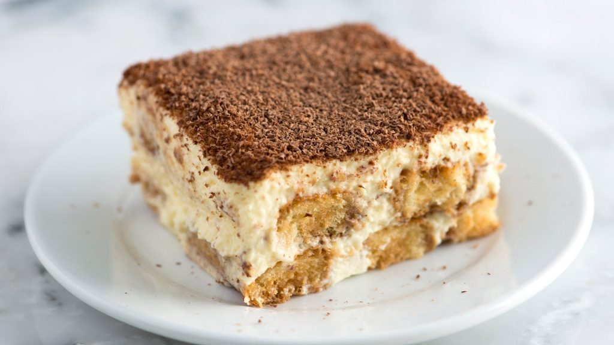

Peixe pênis ao molho de xuca
peixe pênis é uma iguaria nas regioes do leste europeu, tornando um prato tipico de quem vive por lá, o molho de xuca traz uma acidez necessaria ao prato, dando um contraste unico, tornando assim um ótimo prato acompanhado a um bom vinho.